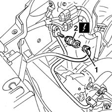

5040B14 air conditioner system multi-level pressure switch - r+r
- Path
- Procedures > 50 AUXILIARY UNITS > 5040 AIR CONDITIONING CASING AND COMPONENTS > 5040B system safety check devices > 5040B14 air conditioner system multi-level pressure switch - r+r
- Kind
- repair procedure (removal / refitting; the operation number is the code)
- Applies to
- all engines; all production periods
- Interactive page
- https://sloeber94.github.io/elrnDB-fMltpl/en/#/2891814
Applies to: all engines; all production periods
 Removing
Removing
 Refitting
Refitting1. Open the bonnet lid and disconnect the electrical connection.
 | Name | Connector |
|---|---|---|
1 | 3 stage pressure switch |
2. Undo and remove the multi-stage pressure switch.

Applies to: all engines; all production periods
Refitting
RemovingCheck that the pressure switch is not damaged and, if necessary, test it.
Tighten the multi-stage pressure switch in its housing.
 | Fastening | Component | Ø | Value (daNm) |
|---|---|---|---|---|
- | - | AIR CONDITION SYST MULTI LEVEL PRES SWTC | - | 0.8 |
Connect the electrical connection.